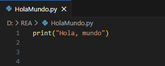
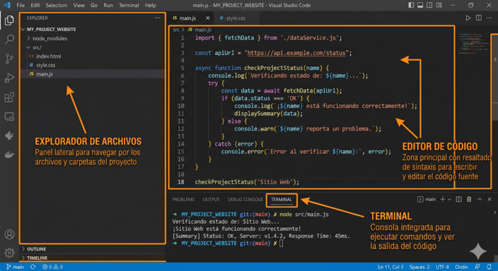

1. Python tu nuevo idioma
Ya sabes que los lenguajes de alto nivel están diseñados para que los entiendas tú, no solo la máquina. Pues bien, entre todos ellos, vas a aprender Python: uno de los más usados del mundo y, no por casualidad, uno de los más sencillos de aprender.
Mira lo sencillo que resulta Python comparado con otros lenguajes. Esta única línea le dice al programa que muestre un mensaje en pantalla. Sin configuraciones, sin complicaciones. Cuando instales tu entorno, será lo primero que escribas.

Eso es Python: un lenguaje que se lee casi como inglés natural. Fue creado en 1991 por Guido van Rossum con un objetivo muy claro: que programar fuera lo más sencillo y legible posible.
¿Por qué vamos a usar Python?
Como has podido ver en el vídeo tenemos varias razones para elegir Python que podríamos resumir en la siguiente imágen:

2. Tu entorno de trabajo
Si quisieras escribir una novela, usarías un procesador de textos como Word o Writer. Para escribir código, necesitas un Editor de Código.
Nuestra herramienta principal será Visual Studio Code (o simplemente VSCode). Piensa en él como un bloc de notas con "superpoderes". Es un programa gratuito, potente y muy utilizado en el mundo profesional.
Para instalarlo, sigue estos pasos:
- Descarga VS Code desde su página oficial: code.visualstudio.com
- Descarga e instala Python desde: https://www.python.org/downloads/
- Abre VS Code e instala la extensión oficial de Python buscando Python en el panel de extensiones.
Si estás trabajando en un ordenador con el sistema operativo EducandOs, busca en el centro de Software (Aplicaciones->Herramientas del Sistema->Centro de Software de EducandOs).
Una vez instalado, este será un entorno de trabajo:


3. Comprueba lo aprendido
Relaciona cada tarjeta con su pareja.
Relaciona cada tarjeta con su pareja.
","showMinimize":false,"itinerary":{"showClue":false,"clueGame":"","percentageClue":40,"showCodeAccess":false,"codeAccess":"","messageCodeAccess":""},"cardsGame":[{"url":"","x":0,"y":0,"author":"","alt":"","audio":"","color":"#000000","backcolor":"#ffffff","eText":"Lenguaje%20de%20bajo%20nivel","urlBk":"","xBk":0,"yBk":0,"authorBk":"","altBk":"","audioBk":"","colorBk":"#000000","backcolorBk":"#ffffff","eTextBk":"Habla%20casi%20directamente%20el%20idioma%20electr%C3%B3nico%20del%20ordenador"},{"url":"","x":0,"y":0,"author":"","alt":"","audio":"","color":"#000000","backcolor":"#ffffff","eText":"Lenguaje%20de%20alto%20nivel","urlBk":"","xBk":0,"yBk":0,"authorBk":"","altBk":"","audioBk":"","colorBk":"#000000","backcolorBk":"#ffffff","eTextBk":"Dise%C3%B1ado%20para%20ser%20entendido%20por%20humanos%3B%20usa%20palabras%20cercanas%20al%20ingl%C3%A9s%20natural"},{"url":"","x":0,"y":0,"author":"","alt":"","audio":"","color":"#000000","backcolor":"#ffffff","eText":"Lenguaje%20compilado","urlBk":"","xBk":0,"yBk":0,"authorBk":"","altBk":"","audioBk":"","colorBk":"#000000","backcolorBk":"#ffffff","eTextBk":"Traduce%20el%20c%C3%B3digo%20completo%20de%20una%20vez%20y%20genera%20un%20archivo%20ejecutable"},{"url":"","x":0,"y":0,"author":"","alt":"","audio":"","color":"#000000","backcolor":"#ffffff","eText":"Lenguaje%20interpretado","urlBk":"","xBk":0,"yBk":0,"authorBk":"","altBk":"","audioBk":"","colorBk":"#000000","backcolorBk":"#ffffff","eTextBk":"Lee%20y%20ejecuta%20el%20c%C3%B3digo%20l%C3%ADnea%20a%20l%C3%ADnea%2C%20sobre%20la%20marcha"},{"url":"","x":0,"y":0,"author":"","alt":"","audio":"","color":"#000000","backcolor":"#ffffff","eText":"Python%20","urlBk":"","xBk":0,"yBk":0,"authorBk":"","altBk":"","audioBk":"","colorBk":"#000000","backcolorBk":"#ffffff","eTextBk":"Gratuito%2C%20vers%C3%A1til%2C%20muy%20legible%20y%20uno%20de%20los%20lenguajes%20m%C3%A1s%20demandados%20del%20mundo"}],"isScorm":0,"textButtonScorm":"Guardar la puntuación","repeatActivity":false,"textAfter":"","version":1.3,"percentajeCards":100,"type":1,"showSolution":true,"timeShowSolution":3,"time":3,"evaluation":false,"evaluationID":"","id":"202651811427-120","msgs":{"msgSubmit":"Enviar","msgClue":"¡Genial! La pista es:","msgCodeAccess":"Código de acceso","msgPlayStart":"Pulse aquí para jugar","msgScore":"Puntuación","msgErrors":"Errores","msgHits":"Aciertos","msgMinimize":"Minimizar","msgMaximize":"Maximizar","msgFullScreen":"Pantalla Completa","msgExitFullScreen":"Salir del modo pantalla completa","msgNoImage":"Pregunta sin imágenes","msgEndGameScore":"Antes de guardar la puntuación comience la partida.","msgScoreScorm":"La puntuación no se puede guardar porque esta página no forma parte de un paquete SCORM.","msgOnlySaveScore":"¡Sólo puede guardar la puntuación una vez!","msgOnlySave":"Sólo puede guardar una vez","msgInformation":"Información","msgYouScore":"Su puntuación","msgAuthor":"Autoría","msgOnlySaveAuto":"Su puntuación se guardará después de cada pregunta. Sólo puede jugar una vez.","msgSaveAuto":"Su puntuación se guardará automáticamente después de cada pregunta.","msgSeveralScore":"Puede guardar la puntuación tantas veces como quiera","msgYouLastScore":"La última puntuación guardada es","msgActityComply":"Ya ha realizado esta actividad.","msgPlaySeveralTimes":"Puede realizar esta actividad cuantas veces quiera","msgClose":"Cerrar","msgAudio":"Audio","msgNumQuestions":"Número de tarjetas","msgTryAgain":"Necesita al menos un %s% de respuestas correctas para conseguir la información. Vuelva a intentarlo.","msgEndGameM":"Has completado el juego. Tu puntuación es %s.","msgUncompletedActivity":"Actividad no completada","msgSuccessfulActivity":"Actividad superada. Puntuación: %s","msgUnsuccessfulActivity":"Actividad no superada. Puntuación: %s","msgTypeGame":"Relaciona","msgCheck":"Comprobar","msgRestart":"Reiniciar"}}4. Importante
Alto vs. Bajo nivel
Los lenguajes de alto nivel (como el que aprenderemos) están pensados para ser leídos por personas; los de bajo nivel, para ser procesados directamente por el hardware.
Compilado vs. Interpretado
El código compilado se traduce entero de una vez creando un ejecutable. El interpretado se traduce y ejecuta línea a línea.
Estructura E-P-S
Todo programa sigue el ciclo: Entrada (recibir datos) > Proceso (hacer cálculos/lógica) > Salida (mostrar resultados).